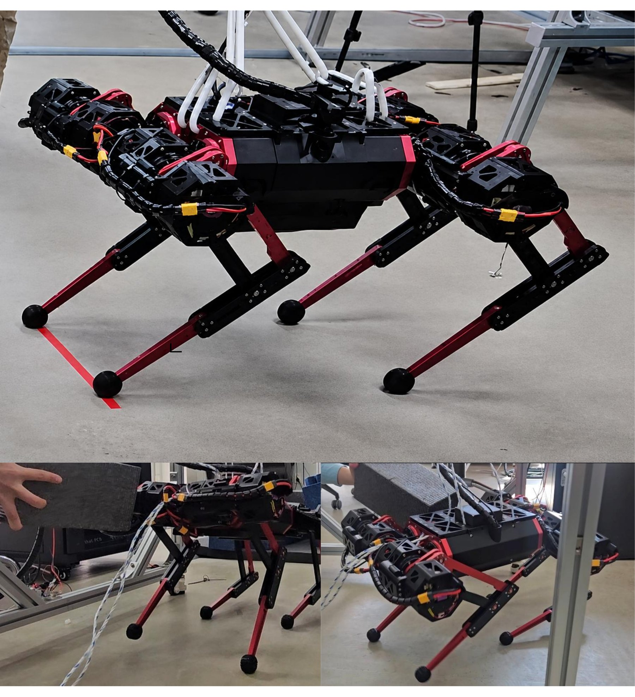
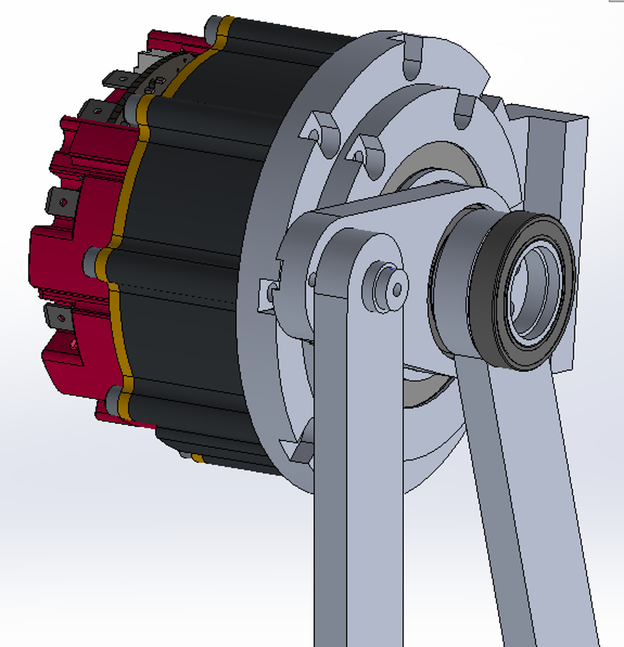
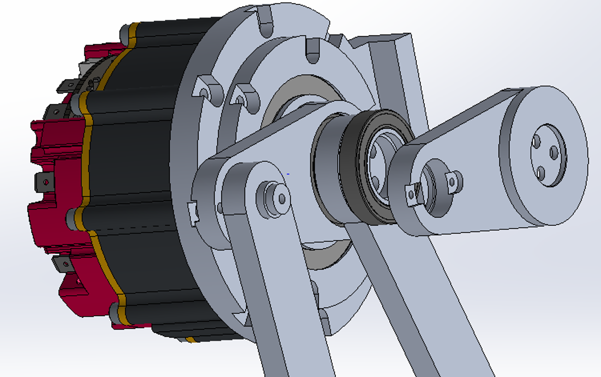
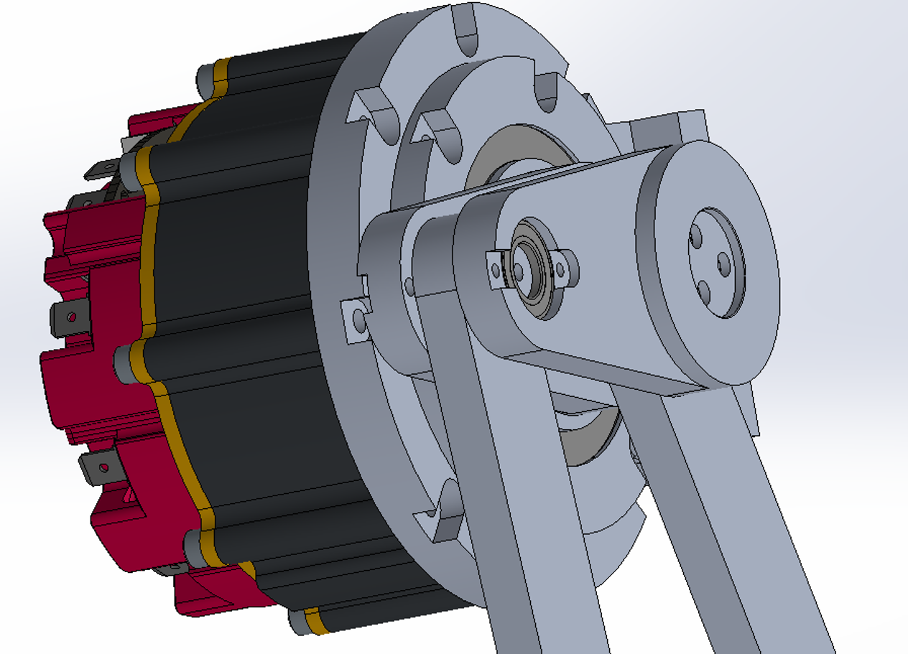
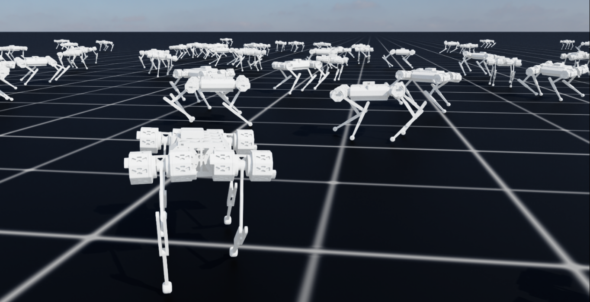
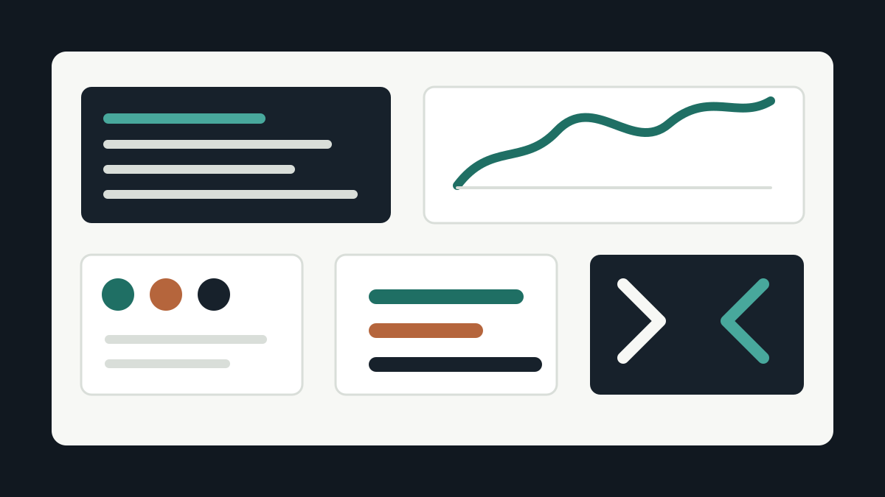

Design
Mechanism Design and Analysis




Graduate Researcher, DGIST
I study dynamics and control-aware learning for sim-to-real legged robots, focusing on dynamics normalization and middle control layers.
Research Focus
I focus on dynamics normalization and a middle control layer for sim-to-real legged robot learning.
Design




System ID
Learning
Control
Programming
Research Directions
Using observer-based estimates to expose contact force, disturbance, and unmodeled dynamics to low-level controllers and learned policies.
Studying how action space, actuator model, delay, domain randomization, and safety layers affect hardware transfer.
Comparing position-target policies, torque-level policies, impedance control, and admittance control under matched disturbance tests.
Selected Work
A compact overview of my current work. Detailed figures, design analysis, and media are collected on the project page.
Mechanical design, fabrication, and assembly of a parallel-link quadruped platform with FEA-based structural checks.
Open full project
Learning-oriented sim-to-real pipeline built around hardware consistency, actuator-aware low-level control, and repeatable validation.
Open full projectControl
Hardware running experiment using a reinforcement-learning locomotion controller on the parallel-link quadruped platform.
Open full projectProgramming

Experiment software for controller validation, data logging, simulation workflows, and hardware-in-the-loop robot testing.
Open full projectPublications
2025
H. Yeo, J. Hong, S. Oh
ICCAS 2025
2025
C. Yeo, Y. Seo, J. Hong, S. Oh
ICCAS 2025
2025
J. Kim, J. Lee, J. Hong, S. Oh
ICCAS 2025
2025
H. Yeo, J. Hong, T. Kong, S. Oh
IEEE/RSJ IROS 2025
2025
C. Yeo, M. Görner, Y. Seo, J. Hong, S. Oh
IECON 2025
2024
J. Hong, C. Yeo, S. Bae, J. Hong, S. Oh
IEEE/RSJ IROS 2024
For citation counts and updates, see the linked Google Scholar profile.
Contact